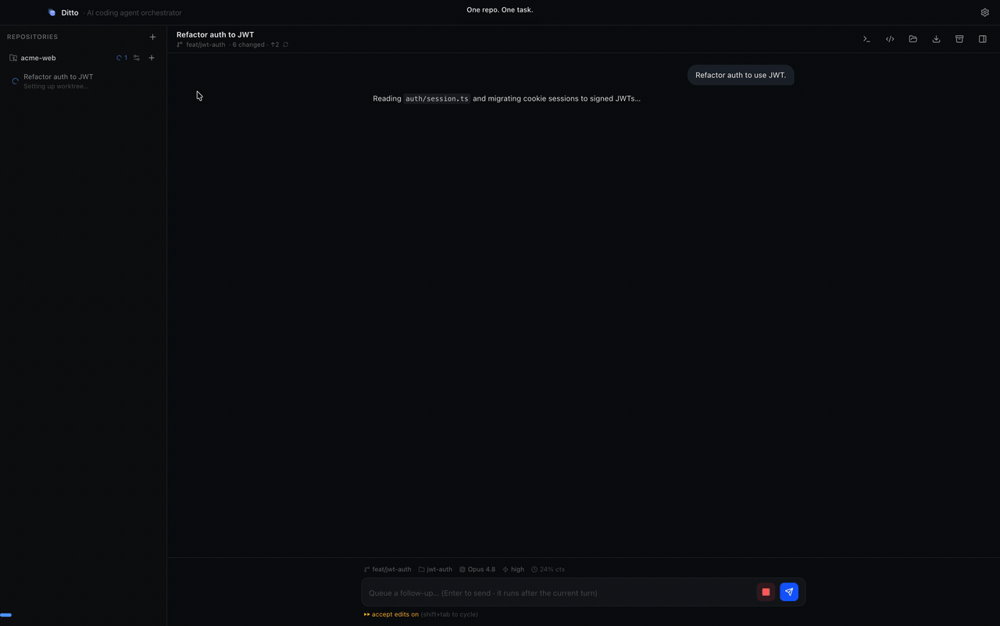

Independent work runs in parallel on macOS — each agent in its own isolated git worktree, on its own branch, shipping its own PR. When work builds on work, stack the agents instead and let Wooi keep the stack straight. 독립적인 작업은 macOS 에서 병렬로 — 에이전트마다 격리된 git worktree 위에서, 각자 자기 브랜치로, 각자 자기 PR 로. 이어지는 작업은 앞선 작업 위에 쌓아 두면, 스택 정리는 Wooi 가 맡습니다.
Free & open source (Apache 2.0) · Apple Silicon · No API key required 무료 & 오픈소스 (Apache 2.0) · Apple Silicon · 별도 API 키 불필요

Wooi removes the wait. Every task gets its own sandbox, so agents never step on each other — and you never lose track of what needs you. Wooi 는 그 기다림을 없앱니다. 작업마다 전용 샌드박스가 주어지므로 에이전트끼리 충돌하지 않고, 사용자 확인이 필요한 세션을 놓칠 일도 없습니다.
Kick off a refactor, a feature, and a bugfix at the same time and watch all three from one sidebar. 리팩터링·기능 추가·버그 수정을 한꺼번에 시작하고 사이드바 하나에서 셋 다 지켜봅니다.
A separate worktree + branch per task means agents never collide in a shared working tree. 작업마다 별도 worktree + 브랜치라, 공유 작업 트리에서 에이전트끼리 충돌하지 않습니다.
Jump straight from an agent's diff to a GitHub PR in one click. 에이전트의 diff 에서 GitHub PR 까지 클릭 한 번으로 넘어갑니다.
Stack a workspace on another's branch. When a parent merges, Wooi rebases the children and retargets their PR bases. 워크스페이스를 다른 브랜치 위에 쌓으면, 부모가 병합될 때 자식들을 rebase 하고 PR base 를 옮겨 줍니다.
No servers of its own and no analytics. Settings and transcripts stay on your machine, in local storage only. 자체 서버도, 분석 수집도 없습니다. 설정과 대화 기록은 내 컴퓨터 로컬에만 저장됩니다.
One task = one dedicated git worktree + branch + agent session. Nothing runs until you send your first message. 작업 1개 = 전용 git worktree + 브랜치 + 에이전트 세션 1개. 첫 메시지를 보내기 전까지 아무것도 실행되지 않습니다.
Point Wooi at a git repository (its main checkout). Configure per-repo
Setup / Dev / Archive scripts like npm install.
git 리포(메인 체크아웃)를 연결합니다. 리포 단위로
Setup / Dev / Archive 스크립트(npm install 등)를
지정합니다.
Each task gets its own worktree + branch + agent session under
~/wooi/workspaces/<repo>/<branch>, running independently
and in parallel.
작업마다 전용 worktree + 브랜치 + 세션이
~/wooi/workspaces/<repo>/<branch> 에 생성되어 독립적·병렬로
실행됩니다.
Review the diff against the base branch and open a GitHub PR in one click — while other agents keep working. 다른 에이전트들이 계속 작업하는 동안, base 브랜치 대비 diff 를 검토하고 클릭 한 번으로 GitHub PR 을 엽니다.
gh credentials
— no separate API key. Support for more agents such as Codex is
planned.
에이전트 지원: Wooi 는 현재 Claude Agent SDK 를 통해
Claude Code 를 구동하며, 설치된 Claude Code 와 gh 의
로그인 정보를 그대로 사용합니다 — 별도 API 키가 필요 없습니다. 앞으로
Codex 등 더 다양한 에이전트를 지원할 예정입니다.
witty-otter) and branch
off the default branch. Turn on manual setup to choose the name and base branch
yourself.
자동 생성된 이름(witty-otter 등)을 받고 기본 브랜치에서 분기됩니다.
직접 입력을 켜면 이름·베이스 브랜치를 직접 고를 수 있습니다.
/model and
/effort. Effort ranges through to ultracode.
상태줄에서 고르거나 /model·/effort 로 바꿉니다. effort
는 ultracode 까지 단계가 있습니다.
git and gh; no Graphite
or other stacking CLI needed.
모든 작업이 독립적이지는 않습니다 — 2번 작업이 1번 위에서 이어져야 할 때가 있죠.
Wooi 는 그 체인을 git 과 gh 만으로 직접 관리합니다.
Graphite 같은 별도 스택 도구가 필요 없습니다.
--force-with-lease. Conflicts stop in the worktree so you can resolve
them there.
최신 부모 브랜치 위로 rebase 하고 --force-with-lease 로 push 합니다.
충돌이 나면 worktree 에 멈춰 있어 거기서 해결하면 됩니다.
git checkout -b and
gh pr create, Wooi reconstructs the stack from the PRs' base links
and shows it the same way.
에이전트가 git checkout -b 와 gh pr create 로 직접
체인을 만들어도, PR 의 base 링크에서 스택을 복원해 똑같이 보여 줍니다.
/ to see the Claude Code commands/skills available in that
worktree.
/ 를 치면 해당 worktree 에서 쓸 수 있는 명령/스킬 목록이
뜹니다.
! to run it as a shell command, with output
shown right in the chat.
메시지를 ! 로 시작하면 셸 명령으로 실행되고 결과가 채팅에 바로
표시됩니다.
/compact manually.
브랜치 · 디렉토리 · 모델 · effort · 컨텍스트 사용량이 항상 표시되고, 길어지면
자동 압축되거나 /compact 로 수동 압축합니다.
Download the latest build, drag it in, and finish a quick onboarding. 최신 빌드를 받아 드래그하고, 간단한 온보딩만 마치면 됩니다.
Download the
latest .dmg
and drag Wooi into Applications. Older builds
live on the
Releases page.
최신 .dmg
를 받아 Wooi 를 Applications 로 드래그합니다.
이전 빌드는
Releases 페이지에 있습니다.
Consent to the Terms/Privacy, then sign in to Claude (finishes in-app via your
browser) and GitHub (opens your Terminal). The gh CLI is required — a
hard gate blocks the app until it's installed and signed in.
약관·개인정보처리방침에 동의한 뒤 Claude(앱 안에서 브라우저로 마무리)와
GitHub(Terminal 에서 진행)에 로그인합니다. gh CLI 는 필수라,
설치·로그인 전에는 하드 게이트가 앱 진입을 막습니다.
Apple Silicon.Apple Silicon.
Installed and signed in.설치·로그인된 상태.
gh CLI reqGitHub CLI for branch/PR management.브랜치·PR 관리용 GitHub CLI.
git reqStandard git install.기본 git 설치.
git clone https://github.com/youngminnnn/wooi.git cd wooi nvm use # optional — Node 20 npm install # deps + Electron binary npm run dev # launch in dev mode
Wooi has no servers of its own and collects no analytics or telemetry. Wooi 는 자체 서버가 없고 분석·텔레메트리를 수집하지 않습니다.
Prompts & code go to Anthropic via the Claude Agent SDK; PR metadata goes to GitHub
via the gh CLI.
프롬프트·코드는 Claude Agent SDK 로 Anthropic 에, PR 메타데이터는
gh CLI 로 GitHub 에 전송됩니다.
Settings & transcripts are stored locally in
~/Library/Application Support/Wooi/.
설정·대화 기록은 ~/Library/Application Support/Wooi/ 에만
저장됩니다.
Free and open source under the Apache License 2.0. Download the latest build and ship from three branches at once. Apache License 2.0 의 무료 오픈소스입니다. 최신 빌드를 받아 세 브랜치에서 동시에 배포해 보세요.